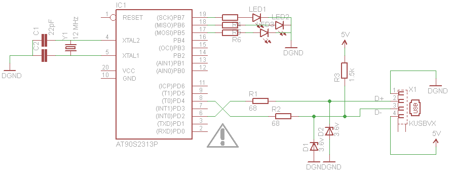

Software: V-USB http://www.obdev.at/products/vusb/index.html
Hardware: RapideUSB
Everything is said : just use that code for ATmel processors, and you can emulate USB stuffs. No need of an Arduino for lightweight projects anymore.
However, there's a high cost to enter and tame V-USB. I believe it came at a hard cost of analysis for lots of people for I see few people giving clear samples of how to do stuffs. Worse are the examples of V-USB itself that are not for beginners
at all: unclear, not really explained, you have no idea why it works or not. So let me try to bring my help here (and if you don't care, me neither, it will be my cookbook).
Golden rule(s) of V-USB:
① There is scarce internet documentation but the latest versions doc is well commented so read it. I was often stucked for hours and the answer was explained nearly in plain text in the file usbconfig.h so just read it carefully !
② Respect the hardware design, that will be so much trouble you can forget about. The one used here under (Zener diode) has the big advantage to let your MCU run at 5v and to cost nothing in parts. Go for it unless you work in 3.3v and in that case use the other option.
Keyboard : Sending characters as a HID (no driver)
This is written at the occasion of creating the Finger Password Keyboard, which is my second USB project. I will use this occasion to improve my explanation.
Links
A big
thank you to the following:
My sample keyboard project
UsbKeyboardSample project on GitHub
Highlights:
- Sending key strokes: do send the character and then send right after the character 0 to signify that key is unpressed (see in the main loop)
- idle: in vusb-config.h in usbFunctionSetup() the get/set of the keyboard idle rate. Just simply ignore it, implement the get/set only
- Keyboard descriptor: just kept the one generated by the USB fundation generator, and use the struct from sample here above.
Keyboard : Receiving data from host as a HID (no driver)

Basic configuration : with that hardware, you will receive the host reports (project Tricolor USB alert)
Option (1): be a Blink(1)
This approach works perfectly, though it forbids to to send and receive characters (not a keyboard). A great "thank you !" to the guys at ThingM for their Blink(1) firmware and software code that I adapted to my needs.
It's a good thing I tried by myself first, it helped me greatly to understand what I had to change/keep in the thingM.blink(1) firmware.
The guys at
ThingM made a Blink(1), a small gadget you plug to your PC and that shows notifications through RGB pulse, fade, blink... requires no driver (you bet, it's a proprietary HID), you install a small software that talks to the gadget on your PC and you're done. That's exactly what we need.
All the source code firmware and software (host side) is here : https://github.com/todbot/blink1
Source code is
on Google SVN, it's tagged. It justs gets one byte message and display it on PORT B of Attiny2313.
I change a bit their code to save space and adapt to my needs:
- Removed the serial number
- Remove their app-specific logic
Option (2): implement from scratch
This approach works partially: you get a keyboard, you can receive the Num lock, Caps lock, etc,,, leds status but you can't have a program talk to you. I tried C# and Python, each time I got errors. So unless one day I (or you?) find and fix the issue, consider that this approach doesn't work.
Use that tag
https://alanarduinotools.googlecode.com/svn/tags/Attiny2313/VUSB_KeyboardReceiver_TricolorUsbSignal
You get a project that receives the changes of leds from your PC. It stopped sending characters (I must have mixed something) but in this project I didn't need it so I just removed everything that was linked to it. It's using an
ATtiny2313 and there's very few space left (maybe 10%) so beware that if you want to do more than blinking leds you might want a slightly bigger MCU in terms of Flash available.
To understand what is it you need, I added a comment
[Receive USB: you need this!] everyhere there was a piece of code needed. But in a nutshell, you need the skeleton of the V-USB project plus:
- In main.c:
- Force the F_CPU at the top 12000000 (=12MHz)
- In hardwareInit() init whatever pins you need (can skip)
- In main(): nothing special, just do the usbPoll() to make your PC happy
- In usbconfig.h:
- Force #define USB_CFG_CLOCK_KHZ 12000
- DO NOT change the "Hardware Config" part, or if you do read carefully the comments and change the other #define at the bottom of the file. You change this if you don't want to use D4 and D2.
- Set #define USB_CFG_IMPLEMENT_FN_WRITE 1 'cause you want the "Set Report" callback to be called (usbFunctionWrite())
- Make sure that this #define USB_CFG_HID_REPORT_DESCRIPTOR_LENGTH 63 is the same size compared to your usbHidReportDescriptor
- About the vendorID : change it! RTFM.
- In vusb-config.h:
- The usbHidReportDescriptor was designed with the HID Descriptor tool http://www.usb.org/developers/hidpage/
- usbFunctionSetup() covers the SET_REPORT and also the GET/SET_PROTOCOL
- usbFunctionWrite() the callback of message from the computer: do your magic there when the PC sends you some bytes
Links
Main sources (thanks to them):
Misc links :
Links
Seems that there is a quite steep learning curve. For instance although my numerous trials and especially errors, it's still not working for me. Let's inspire from other smarter guys to become ourself a smarter gyu: